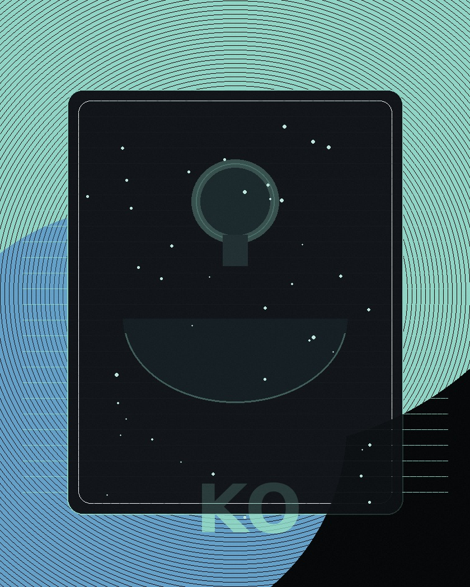

“Kenny turned a rough brief into a storefront that felt considered and ready for real customers. He anticipated the awkward states — empty screens, focus, loading — and resolved them before they became issues.”
Kenny Olanrewaju · Web developer · Lagos
Crafting digital experiences through code.
Websites that turn browsers into customers.
Hand-coded, mobile-first sites for brands, shops, galleries, restaurants, and real businesses — sharp, fast, and built to be used.
Scroll
Now
Open for freelance · Building product sites from Lagos · Prefer clear briefs and honest timelines
Selected work
Sites that hold up
in the wild.
Real products. Real users. Quiet details that still matter after launch.
Testimonials
What collaborators say.
“Communication was clear and steady. The gallery remained composed even on a slow network — attention to performance and detail I don’t often see at this stage of a project.”
“The site stayed warm without becoming busy. Custom cake orders started the week we launched. Kenny understood both the brand and the practical needs of running a bakery online.”
Notes
Things I’ve learned while building.
Practical lessons from building real websites — from clear layouts and responsive design to the small details that make an interface easier to use.
Start with the words
If the text is hard to read, nothing else on the page can save it. How I set hierarchy before colour or animation.
Read note →Plan for the messy path
Empty screens, slow loads, and errors are part of real use. Why those states deserve the same care as the happy path.
Read note →Keep the interface calm
One accent, real photos, motion only when it helps. How restraint makes a product easier to trust.
Read note →Certification
Certified in web development.
Completed through Sololearn, with both theory and hands-on practice.
Course completed
Web Development
Course Certificate · Sololearn
2026
Year completed

Services
What I ship.
Custom websites built to look polished, work smoothly, and give visitors a clear path from first click to next step.
Product websites
Marketing and product pages that load fast, read clearly, and convert without the gimmicks.
- Landing & marketing sites
- Brand and portfolio pages
- Responsive systems from mobile up
Commerce fronts
Shops with honest product flows — cart, detail, offers — built to take real orders.
- Catalogue & product detail
- Cart and checkout UX
- Promos and countdown states
Galleries & media
Image-led interfaces where layout, rhythm, and hover teach looking — not clicking noise.
- Grid composition systems
- Lightweight viewers
- Download and save flows
UI polish & systems
Tokens, type scales, and the edge cases — empty, error, focus — that make a site feel complete.
- Design tokens & type scales
- Quiet motion
- Accessibility pass
Skills
Stack.
The core technologies I use to build responsive, interactive websites and turn designs into working experiences.
HTML5
Clean, well-structured pages that work for everyone, including people using screen readers.
CSS3
Layouts that look great on any screen, with smooth animation that helps rather than distracts.
JavaScript
Interactive features like carts, filters and galleries that feel quick and respond instantly.
Process
How we work together.
Four simple steps, so you always know what is happening and what comes next.
-
01
Plan
We talk about what your website needs to do, who will use it, and what a good result looks like. Nothing gets designed until this is clear.
-
02
Build
I build the site for phones first, then make sure it looks great on tablets and computers too.
-
03
Polish
I check the small details, like pages with no content yet, error messages and keyboard use. Animation is only added where it actually helps.
-
04
Launch
Your site goes live with clean, tidy code, so any changes you want later are quick and easy.
About
Built in Lagos.
Shipped for the web.
I care about the quiet details that make a site feel finished — type that reads, motion that explains, and interfaces that still work when the network is slow and the light is bad.
Most of my work sits between commerce, galleries, brand sites, and personal websites. I start with structure and type, then stay with the details — focus, empty states, loading, errors — until the product feels steady in someone’s hands.

Stack
- HTMLClear structure first — so the page makes sense to people and machines.
- CSSLayout, type, and colour systems that stay consistent under pressure.
- JavaScriptInteraction where it helps; never complexity for its own sake.
Craft
- Responsive UI Mobile is the default canvas. Desktop gets more room, not a different product.
- Motion Short, interruptible, quiet. Transform and opacity — never carnival.
- Accessibility Focus, contrast, names, and keyboards. Craft you can feel with your eyes closed.
- UI systems Tokens, type scales, and components that stay consistent under pressure.
Principles
Type leads
If the words don’t read well, colour and motion are just noise.
Finish the edges
Empty, error, focus, loading — the states people notice when something goes wrong.
Prefer quiet
One accent, real images, motion that explains then steps aside.
FAQ
Straight answers.
What kind of projects do you take?
Personal and business sites built custom — product pages, shops, galleries, and brand sites. I focus on made-to-fit work, not generic templates.
Do you work on existing websites?
Yes — as long as they’re custom-built (not locked template platforms). I can improve, extend, or rebuild sections of an existing codebase when the structure is open enough to work in.
What’s your stack?
HTML, CSS, and JavaScript day to day. I keep the stack lean so sites stay fast and easy to maintain.
How do we start?
Send a short note with the goal, timeline, and any links or references, and I’ll take it from there.